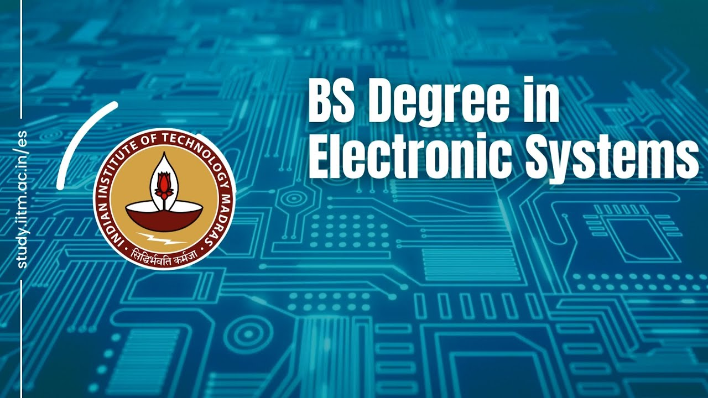

About the Institute
Indian Institute of Technology Madras (popularly known as IITM or IIT Madras) is a public technical university located in Chennai, Tamil Nadu, India. It is selected as one of the 8 public Institutes of Eminence of India. As one of the Indian Institutes of Technology (IITs), it is recognized as an Institute of National Importance.[6] IIT Madras is ranked among the most prestigious academic institutions in India.[7]
Founded in 1959 with technical and financial assistance from the former government of West Germany, it was the third Indian Institute of Technology established by the Government of India. [8][9] IIT Madras is ranked the top engineering institute in India by the Ministry of Education's National Institutional Ranking Framework since its inception in 2016.[10][11][12] IIT Madras secured the first spot with a score of 90.04 in the National Institute Ranking Framework
Campus Look
Departments- Aerospace
- Electrical
- Computer Science
- Biotechnology
- Mechanical